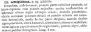

Click on images to enlarge
{kind=link}

Fig. 1. Paropsis semiglobosa, description
Name
Paropsis semiglobosa Chapuis, 1877
Corresponds to
Diagnosis and Notes
Blackburn (1897) did not see a type specimen of P. semiglobosa for his revision of the genus, but dealt with it from the description as part of his 'subgroup iv' (i.e., those species without "strongly marked characters", whose greatest height is considerably in front of the middle of the elytral margin). Within that group, he characterises it as:
AA. Prothorax not (or scarcely) explanate at sides;
BB. The verrucae unpunctured or nearly so;
C. Elytra not having a sharply defined discal transverse wheal-like ridge;
DD. Subhumeral depression wanting;
E. Elytral interstices but little rugulose, at least not to the extent of obscuring the punctures and verrucae;
F. Elytra (at least on hinder part) studded with sharply defined isolated bead-like verrucae;
G. The elytral verrucae small;
HH. The elytral puncturation notably finer and closer;
II. The marginal part of the elytra scarcely distinct from the discal.
There are only a few species of Trachymela that are as small as this species, and Chapuis description provides just enough detail to be able to associate it with a known species, Ta161. Ta161 is a relatively abundant species in South Australia. It is a little larger (4.4-5.8 mm, n=44) than the 4 mm size given by Chapuis but otherwise fits his description very well. Ta161 has a black foveal peak, its scutellum is lightly and finely punctured, the humeral callus is black and another black patch is present between it and the scutellum, there is a scatter of darkish verrucae near the elytral apex, and the thoracic ventral segments are darker than the rest of the venter, sometimes black.
Type specimen
Not examined.
Original description
Translation of original description (Figure 1) by ChatGPT, 04/2026:
Rounded, reddish-testaceous. Pronotum sparsely and finely punctate, depressed at the sides, there with larger punctures partly confluent and adorned on each side with a black blunt tubercle. Scutellum finely punctulate. Elytra moderately punctate-striate, with rather numerous minute punctures intermixed; in the middle slightly and sparsely strigose; with two black spots behind the base, one humeral, the other between the first and the scutellum; toward the apex with some blackish-brown papulae. Chest black; abdomen and legs ferruginous. Length 4 mm. Adelaide
References
Chapuis, F. 1877, "Synopsis des espèces du genre Paropsis", Annales de la Société Entomologique de Belgique (Comptes-rendus), vol. 20, 67-101 (page 97).
Copyright © 2026. All rights reserved.